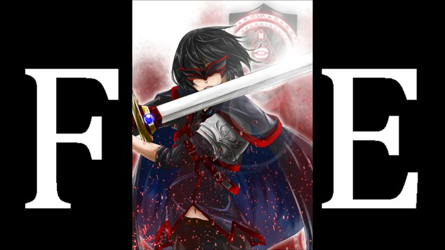
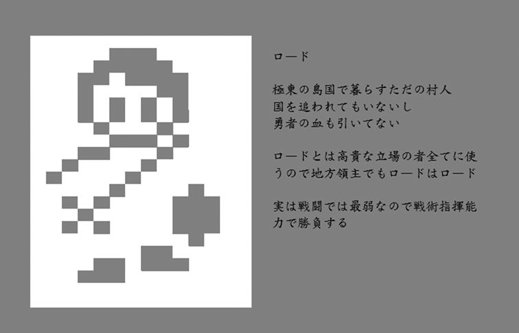
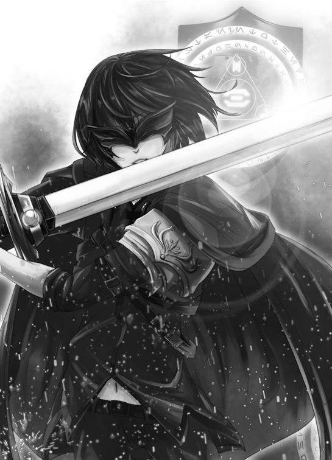

| FE フレイム・エスカシャン: サーガA 【２面】 (14th Fleet ゲームブック) | |
| 14th Admiral | |
| UNKNOWN (2017) | |

イラスト： 実都留
....................................
フレイム・エスカシャン サーガＡ（アライアンス）
Flame Escutcheon Saga Alliance
～炎紋章の盾～
【２面】～剣と盾と君と紅と～
「ま、まさか......こんなことが...... ！」
ロードは自らの目を疑うようなシーンに驚愕し、飛び起きるように目が覚めた。
「今日もまた、か」
ここのところ、同じ夢ばかり見ていた。驚くべき何かに遭遇して。なのに、それが何なのかがわからないのだ。ただただ不安だけが募り、ロードは胸元のアミュレットを無意識に転がしてしまう。それはハイネス姫がくれた、炎が描かれた盾型のペンダントだった......
....................................
■ＦＥとは
ＦＥ（フレイム・エスカシャン：Flame Escutcheon ）は、ドラマティック・シミュレーションＲＰＧをゲームブックで再現することを目的に作られた連作短編シリーズです。少しずつ舞台や部隊や時代を変えながら、剣と魔法の世界を戦い抜く物語が描かれます。ドラマを描くに適した『ゲームブック』という媒体で、いかに心躍るＳＲＰＧのシステムを構築するか、数名の作家が知恵を絞って執筆します。物語の行く末だけでなく、切磋琢磨する作家や作品の変化にも目を向けながら楽しんでみてください。
■フレイム・エスカシャン・サーガＡ（ＦＥＡ）
作家"提督"による作品をサーガＡとします。本作品は、サーガＡの【２面】です。
■ＦＥルール（Ver.A1 ）
主人公であるロードは、ごくごく平凡な少年ですが、その人材活用能力には一目置かれています。仲間を効果的に動かし戦果を上げることで、自らの名声を上げていくことが目的です。名声が上がれば、ついてくる仲間も増えていくことでしょう。いつか一軍の将、一国の領主になることを夢見て、ロードは騎士団とともに旅に出ました。
主人公ロードには『名声値』が、仲間となるキャラクターには『雇用値』が設定されています。雇用値の合計が、名声値を超さない範囲で仲間を募ることができます。信頼関係のあるキャラクターは、低い雇用値で仲間になってくれます。初見の相手では、高い雇用値を必要とするでしょう。しかしロードが名声を上げていけば、おのずと多くの仲間を募れるようになるでしょうし、個々のキャラクターと信頼関係を築けば雇用値が下がることもあるでしょう。
名声を高め、信頼を築き、この世界での影響力を高めていきましょう。夢を現実とする日まで。もちろん、そんな個人的な野望とは関係なく、世界は激動のときを迎えつつあるのですが......

■初期パラメータ
ロード ：指揮官 名声値：5 ～7 （1 面終了時のデータを引き継いで下さい。1 面をプレイしていない場合は、5 から始めて下さい）
ウォール：壁戦士 雇用値：1
エイム ：狩人 雇用値：2 ～1 （1 面終了時のデータを引き継いで下さい。1 面をプレイしていない場合は、2 から始めて下さい）
ナイト ：剣騎士 雇用値：2
ランス ：槍騎士 雇用値：2
それではサーガＡの【２面】スタートです。
....................................
【サーガＡ ２面】～剣と盾と君と紅と～
「やっかいなことになった」
強い海流に流されて辺境の港町に寄港したのだが、そこはすでに海賊のアジトと化していたのだ。補給をしようにも、海賊を追い出さない限り、逆に略奪されてしまうことだろう。何より暴虐を尽くされている港町の人たちを助けたいとロードは思った。
「船は海賊の小型船に囲まれている。港の酒場では火の手が上がっているのが見える。広場では人だかりが出来ており、港町の高台には砦がこちらをにらんでいる......」
ロードが状況分析をしていたところへ、一羽の鷲馬獣が舞い降りてきた。馬とグリフォンをかけ合わせた幻獣だ。その背に短髪の女性がまたがっている。槍を手にしたその姿は、ハイネス姫とはまた違った魅力を感じる。
「刀傷だらけの男を見なかった？」
唐突な質問だ。
「どうかしたのか」
ロードは警戒を解かず慎重に聞き返した。
「失礼。私は鷲馬獣遣いのポグリフ。私の護衛に連れてきたギゾックなんだけど、任務を忘れてどっか行っちゃったのよ。アイツのことだから、明らかに燃えてる酒場か広場の人だかりだと思うんだけど、空から単独で接近するのは危険を感じるからね。援護が欲しい」
快活で人懐っこい笑顔だが、有無を言わせぬ強引さがある。この女性も権力を持った側の人間だろうか。
ロードは思案した。
壁戦士のウォールは攻防ともに高いレベルにあるが、ポグリフのスピードについていけるか心配だ。
狩人のエイムは遠距離から支援ができるが、直接攻撃に持ち込まれると危険だ。
ナイトは手数で勝負するタイプの剣騎士だ。馬の機動力を生かせれば、いい仕事をしてくれるだろう。
ランスは槍騎士なので、一撃離脱の必殺攻撃が得意だ。同様に助走距離を必要とするが。
鷲馬獣遣いのポグリフは、指示を出せば言うとおりに動いてくれるらしい。初対面で上手く連携が取れればよいが（ポグリフの雇用値は3 ）
■仲間
ロード ：指揮官 名声値：5 ～7
ウォール：壁戦士 雇用値：1
エイム ：狩人 雇用値：2 ～1
ナイト ：剣騎士 雇用値：2
ランス ：槍騎士 雇用値：2
ポグリフ：鷲馬獣 雇用値：3
■周囲の海賊の小型船、燃える酒場、広場の人だかり、高台の砦の４ヶ所に
■ロード、ウォール、エイム、ナイト、ランス、ポグリフを振り分けること
騎士団を率いていたマスターから指揮権を渡されたものの、全ての仲間に一度に指示を出せるほど信頼されたわけではない。雇用値合計が名声値を超えないように、限られた人員をうまく配置せよ。指示を出せなかったキャラは、独自に船の守りに当たることになる。
また、行ける場所が減ってよいなら同じ場所に２人以上行かせてもよい。
人材配置を決めたら、以下の選択肢のうち人を配置した場所の中から、より優先順位が高いと思う場所を１つ選んで読み進むこと。
....................................
何を置いても、目の前の敵だろう。
「目の前の海賊を攻撃だ！」
誰を配置しただろうか。
・２人以上なら段取り良く敵と船を鎮（沈）められる。
・１人でもエイムなら遠めから攻撃して、ポグリフなら高速で一撃離脱攻撃をして、しのぐことができる。
・それ以外なら本船が海賊に強奪されてしまう。旅はここで終わりだ。 【14 】へ進め。
みんな生き残っているなら他の場所を確認せよ。全ての仲間が行動を終えていたら、行動終了を選べ。
....................................
酒場が燃えるなんてどういう状況だ。
「ポグリフの護衛とやらがいるかもな。人を送ろう」
誰を配置しただろうか。
・２人以上なら 【13 】へ進め 。
・１人なら各所で海賊の襲撃を受けて足止めされ、到着が送れる。ようやく到着したときには酒場は完全に焼け落ちており、その場で乱闘を繰り広げていたという男たちのことは分からなかった。他の場所を確認せよ。全ての仲間が行動を終えていたら、行動終了を選べ。
....................................
何事もないのに人だかりが出来ることはあるまい。
「広場の様子が気になる。確認しよう」
誰を配置しただろうか。
・ロード、エイム、ポグリフならスムーズにたどり着ける。 【16 】へ進め。
・ナイトかランスだと馬が人混みに阻まれて、ウォールだと鎧が重すぎてたどり着けない。他の場所を確認せよ。全ての仲間が行動を終えていたら、行動終了を選べ。
....................................
ボスがいるなら、あそこか。
「高台の砦を押さえるぞ！」
誰を配置しただろうか。
・２人以上配置したなら、砦から街の混乱を眺めていた海賊の親分を倒すことができる。
・また１人でもナイト、ランス、ポグリフなら素早く接近して砦を牽制することができる。劣勢を悟った親分は降伏する。
・エイムなら、丘の木の上から砦のテラスで街の様子を観察している親分を射抜くことができる。もし名声が５か６だった場合、名声＋１。
・ウォールなら移動力が足りなくて、ロードなら戦闘力が足りなくて、砦を制圧できない。敗戦だ。 【14 】へ進め。
他の場所を確認せよ。全ての仲間が行動を終えていたら、行動終了を選べ。
....................................
ここまでに 「1-1 周囲の海賊の小型船」に仲間を配置していなかった場合、本船が海賊に強奪されてしまう。旅はここで終わりだ。 【14 】へ進め。
また「1-4 高台の砦」を攻略できていない場合も、港町で十分な補給が出来ないため、ここで旅が終わる。 【14 】へ進め。
船を守り、砦も攻略していた場合......
・今回エイムに指示を出していたなら 【11 】へ進め。
・ 今回ポグリフに指示を出していたなら 【12 】へ進め。
・まだギゾックが合流していないなら 【15 】へ進め。
（この３つは、どの順で回ってもよい）
・どの条件も満たしていないなら 【2 】へ進め。
....................................
新たに二人の協力者を得た騎士団は、海図に示された神鳴りの神殿へと船を急がせる。
「お前のことが好きではないが」珍しくナイトからロードに話しかけてきた。「その戦略眼と、ハイネス姫を救出しようという気持ちだけは認めてやる」
「あの直情的なナイトに認めさせたんです」ランスは後詰めを務めたようだった。「自信を持って指揮を取ってください。戦場で迷われる方が困りますから」
「分かった。実績を積み、名をあげて、みなが誇れるような指導者になってみせるよ」
ロードは騎士たちと信頼関係を築いた。ナイトとランスの雇用値が１に下がった。
船旅は順調かと思われた矢先、大きく甲板が傾いた。
「どうした！？」
ロードが問いただす。
「勘弁してくれ」
鎧の重さですっ転んだウォールが叫ぶ。
「見て、あれ！！」空へ上がって状況を確認したポグリフも叫んだ。「クラゲッソ・スペースだわ！」
クラゲッソ・スペース。
それは魔の乱獲地帯と言われ、地元の漁師組合によって中型魚が大量に獲られた結果、クラーケンとクラゲの大発生を引き起こした。その長い足と触手で船の舵を絡め取り、海の底へと沈めてしまうという、海賊も恐れる魔の海域だ。また沈んだ船の残骸が堆積し、あちこちで海上にマストが突き出ている。時折り船そのものも幽霊船よろしく浮き上がってくるので、デビルファウンテン（魔の生じる泉）とも呼ばれている。
船はエレキクラゲに包囲され、航路は沈没船の残骸に阻まれ、そして行く先には巨大なクラーケンの影が揺れている。
「さぁて。生き残って名を残すことができるかな」
ロードは分析した。水中で電撃を喰らうのはよろしくない。手前の沈没船には何か光るものがある。奥の沈没船には人影が見えた気もするが気のせいかもしれない。どちらも、今にも再び沈没しそうだ。クラーケンは強力だが、船が動けるなら全員で攻撃するなり逃げるなり方法はありそうだ。
「よし、この作戦で行こう」
ロードは指示を出した。
■仲間
ロード ：指揮官 名声値：5 ～8
ウォール：壁戦士 雇用値：1
エイム ：狩人 雇用値：2 ～1
ナイト ：剣騎士 雇用値：1
ランス ：槍騎士 雇用値：1
ポグリフ：鷲馬獣 雇用値：3 ～2
ギゾック：義賊 雇用値：2
■周囲のエレキクラゲ、手前の沈没船、奥の沈没船、クラーケンの４ヶ所に
■雇用値の合計が、名声値を超さない範囲で仲間を募り、振り分けること
新参者ながら、戦闘に関しては積極的に意見を求められるようになってきた。雇用値合計が名声値を超えないように、限られた人員をうまく配置せよ。指示を出せなかったキャラは、独自に船の守りに当たることになる。
また、行ける場所が減ってよいなら同じ場所に２人以上行かせてもよい。
人材配置を決めたら、以下の選択肢のうち人を配置した場所の中から、より優先順位が高いと思う場所を１つ選んで読み進むこと。
....................................
「触れたらしびれるよな。いったいどうやって守るんだ？」
ロードは思案した。
誰を配置しただろうか。
・２人以上なら、苦戦しながらもクラゲを撃退できる。
・エイムなら、船上から安全にクラゲを射抜くことができる。
・ポグリフなら、上空から水に触れずに安全に攻撃できる。
・それ以外で１人だけの場合、クラゲにしびれて動けなくなり、撃退失敗だ。だが、すぐに船が沈むわけではない。
他の場所を確認せよ。全ての仲間が行動を終えていたら、行動終了を選べ。
....................................
「デビルファウンテンか......」ロードがつぶやいた。
「海なのに泉とは、これいかに」ギゾックが茶化した。「トレビよりは大きな光り物に見えるがな」
光っていたのは、大きな純金製の風車像だった。
誰を配置しただろうか。そして、どのタイミングで探索に入っただろうか。
・配置メンバーにウォールが混じっていたなら、どのタイミングで探索に来ようが、鎧の重さで沈没船はすぐに再沈没する。危うく一緒に溺れそうになって慌てふためくウォールを見て「すまん、俺の不手際だ」とロードは心のなかでつぶやいた。
・どの場所より真っ先にここを（ウォール以外で）探索していたなら、沈没船から長年海賊たちが探し求めていた幻の秘宝『ドンヒホーテ』を手に入れる。名声＋１。
・他の場所を探索してからここへ来たなら、沈みゆく船を探索する手立てはもうない。他の場所を確認せよ。ただし、カタールが仲間にいるなら 【22 】へ進め。
他の場所を確認せよ。全ての仲間が行動を終えていたら、行動終了を選べ。
....................................
誰かが叫んだ。
「こっちの船は特に不安定だぞ！」
誰を配置しただろうか。そして、どのタイミングで探索に入っただろうか。手前の沈没船を先に確認していたら、その間にこちらの船は沈んでいる。他の場所を確認せよ。全ての仲間が行動を終えていたら、行動終了を選べ。
先にこちらの船を確認していた場合......
・それがウォールなら、重すぎてあっさり海の底へと沈んでゆく。呆然とする仲間たちも衝撃で存分に戦えず、程なく海の藻屑となった。 【14 】へ進め。
・それ以外なら、沈没船の中に誰かいるのを発見する。
「漂流者を見つけました」
砂漠の民か、東方の侍か......とにかく、曲刀を手にした痩身の男が難破船の上でじっとこちらの船を見ていた。
「同じ方向へ旅するのでよければ乗船を提案するが、どうかな」
ロードの提案に、曲剣士は静かにうなずいた。
「......感謝する」
「あなたの名は？」
「語る名はない。故国を追われ、人前に出られぬ身ゆえ」
「では、これから功績を積み、語る名がある剣士となってはどうかな」
「力を貸せ、と？」
ロードは、ただ笑って返した。
「我が名はカタール」
「剣の名か。いいね」
カタールが仲間になった。雇用値は２だ。 他の場所を確認せよ。全ての仲間が行動を終えていたら、行動終了を選べ。
....................................
クラーケンを倒すか、かわすかしなければならないが、そもそも船を動かせる状況にあるだろうか。
「船は動けるか？」
ロードは、ここまでの戦況を確認した。
・「1-1 周囲のエレキクラゲ」を撃退していて、なおかつ２人以上仲間を配置していたらクラーケンを倒せる。
・「1-1 周囲のエレキクラゲ」を撃退していて、ギゾックを配置していたら 【17 】へ進め。
・「1-1 周囲のエレキクラゲ」を撃退していて、ギゾック以外の誰か配置していたら、勝てないまでも逃げ切ることができる。
・「1-1 周囲のエレキクラゲ」を撃退していないなら、出来ることはない。
他の場所を確認せよ。全ての仲間が行動を終えていたら、行動終了を選べ。
....................................
ここまでの戦果を確認せよ。
・クラーケンを倒すか、クラーケンから逃げるかしていれば先へ進軍できる。 【3 】へ進め。
・どちらも満たしていないなら、魔の海域に沈むことになる。作戦は失敗だ。 【14 】へ進め。
....................................
ところでカタールは合流しているだろうか。
合流していないなら 【20 】へ 進み 、合流 しているならこのまま読み進ること。
長い航海の末にたどり着いた場所は、広大な砂漠だった。
『神鳴りの神殿は、この砂漠の奥地にあるという』
今はなきマスターが、そう言っていたらしい。悪魔とそれを操る者たちも神殿へ向かっているのだとしたら、そこでハイネス姫を取り戻せる可能性は十分にある。
「厳しい旅になるが、乗り切るぞ！」
ロードは、みなを鼓舞した。
「おう！」
この士気の高さは、砂漠でみなが消耗し切る前に悪魔軍の先遣隊を発見することで、なんとか維持された。いやむしろ、その悪魔軍が砂漠の民を襲っていたことで、士気は大いに高まった。
「どうやら襲われているのは、この砂漠地方の領主のようだぞ」
ナイトが手旗信号で、遠くの砂漠の民とやり取りをしていた。
「意外と器用なんだな、ナイト......」
剣技だけでなく、手旗信号も素早い旗さばきだった。
「で、戦力配分はどうするんです？ 悪魔の何匹かはこちらに気づいてやってきますが」
ランスがじっとロードを見ていた。
「そうだなぁ」ロードは狩り達人の方を見た。「エイム。彼我の戦力を正確に知りたい」
「了解」エイムが狩りで鍛えた目を細めた。「砂漠の民は駱駝兵１、戦象兵１、戦車兵１。個の戦力は高いけど、機動力は高くない。囲まれると危ないね。それを６匹の魔獣が取り囲んでる」
「２倍の戦力ね」ポグリフが短髪を揺らしながら首をかしげた。「援軍がいるかしら」
「かもな」ウォールがそっけなく返す。「だがこっちも楽じゃないぜ」
翼魔が９匹ばかり接近してきていたからだ。
「いいぜ、やらせろよ」ギゾックが大剣を抜いた。「３倍までは同時にあいてしてやろう」
「む」カタールも抜刀した。「遅れを取るわけにはいくまい」
「ふむ」ロードは思案する。「あの奥のオアシス、燃えてる気がするんだよなぁ。それに遠くにキャラバンも見えないか？」
それが重要な案件かどうか、それが問題だ。
■ロード陣営
ロード ：指揮官 名声値：5 ～10
ウォール：壁戦士 雇用値：1
ギゾック：義賊 雇用値：2
カタール：曲剣士 雇用値：2
■砂漠の民陣営
スルタン：駱駝兵
エレハン：戦象兵
チャリオ：戦車兵
■どこにも移動できる者
エイム ：狩人 雇用値：2 ～1
ナイト ：剣騎士 雇用値：1
ランス ：槍騎士 雇用値：1
ポグリフ：鷲馬獣 雇用値：3 ～2
■ロード陣営、砂漠の民陣営、オアシス、キャラバン隊の４ヶ所に
■雇用値の合計が、名声値を超さない範囲で仲間を募り、振り分けること
ここまでの展開によっては、全ての仲間に一度に指示を出せるほどになっているかもしれない。人員をうまく配置せよ。指示の出せなかった仲間は、現状を維持することだろう。
また、行ける場所がさらに減ってよいなら同じ場所に２人以上行かせてもよい。
人材配置を決めたら、以下の選択肢のうち人を配置した場所の中から、より優先順位が高いと思う場所を１つ選んで読み進むこと。
....................................
９体の翼魔が接近してきた。
誰を配置しただろうか。いや、結果から言うと、誰を配置しても同じ結果に終わる。ギゾックが３体を、カタールがもう３体を始末し、ウォールが鎧と槍で２体を受け止め、ロードが最後の一匹を切り裂いたからだ。余剰兵力を配置する必要はなかったようだ。
「やるな、カタール」
ギゾックが並び立つ剣士の腕前を賞賛した。
「貴様こそ、軽薄に見せかけているが油断できぬ男よ」
二人はお互いに認めあったようだった。他の場所を確認せよ。
....................................
誰を配置しただろうか。
いや、結果から言うと、これは空振りに終わる。なんと砂漠の民は倍する敵を自分たちで始末してしまったからだ。
戦象に乗ったエレハンは、象の前足で魔獣を踏みつけ、象上から投げた槍でもう一匹を串刺しにした。
四輪戦車に乗ったチャリオは、弓で一匹を射抜き、車輪に取り付けた回転刃で今一匹を葬った。
駱駝に乗った騎士スルタンは、右手のシャムシールで一方を、左手のシミターで他方を切り裂いた。
「ふむ。やはり西方のシミターより砂漠のシャムシールの方が切れ味がいいな」スルタンが余裕の表情で言った。「おや、今ごろ加勢に来てくださいましたか。いや、失敬。つい本音が。しかし感謝はせねばなるまい。形だけだとしても。いやいや、形式が意識を体現するわけで、そんなに気分を害することはないぞ」
急いで駆けつけた者が閉口したのは言うまでもない。悪い人間ではなさそうなのだが......
「貴殿の働きは、可及的速やかに言い触れるよって勘弁されたし」
よくわからないが名声＋１すること。他の場所を確認せよ。
....................................
誰を配置しただろうか。
いや、結果から言うと、これは空振りに終わる。オアシスは幻影だったのだ。
「やられた！」
戦力を無駄に分散してしまった。そのぶん味方が危ない！
他の場所を確認せよ。全ての仲間が行動を終えていたら、行動終了を選べ。
....................................
速度のはやい翼魔の一匹が、遠くのキャラバンの商隊を襲おうとしていた。
しかし１人でも仲間を派遣していたなら、その速度（または遠距離支援能力）ゆえ、キャラバンの窮地を救うことができる。
「いやぁ、助かりました！」商人にしては細身な男が、心からの賛辞を述べてくれた。「商人はみんな太ってるとでも思ってましたか？ 食事を切り詰めてでも、いい品買うのに必死でね。おや？ この剣が気になりますか。すばらしき鑑定眼です。これは砂漠の旧王家が使っていたとされる鉈剣フォションです。300 年前にこの砂漠の地図を作り、埋もれた美術品類をどんどんと発掘した歴史家ヘンリー＝ファルシオンによると、旧王家フォションの装具には盾の型に炎の紋様が彫られていたとか。実はそのヘンリーこそ、旧王家の末裔アンリ＝フォションその人だという説もありますが...... 彼はスイーツギルドを立ち上げることに財産と人生を捧げたので、王家の復活はなりませんでした。今に伝わるのは...... 紅茶とジャム、そして甘マカロニだけですな」
そこで商人は鉈剣を灼熱の太陽に掲げた。
「その価値を認めるものがいなければ、由緒正しき武具もただのガラクタに同じ。良ければ進呈しますよ。あなた方に使っていただいたほうが剣も喜ぶでしょう」
ロードは鉈剣フォションを手に入れた。名声＋１。
他の場所を確認せよ。全ての仲間が行動を終えていたら、行動終了を選べ。
....................................
戦いは終わった。もう空に翼魔はおらず、砂漠に魔獣はいなかった。ロード陣営も砂漠の民陣営も、悪魔たちを一蹴したのだ。お互いの戦いを間近に見たことで、両陣営の信頼は高まった。それがスルタンの依頼につながった。
「その腕と戦術眼を見込んで頼みたい。我が城と神殿が襲撃に会ったのだ」スルタンは、この辺境の砂漠の王家だという。「我がスルタン家の王城あかね岩城と、かつての支配者だったフォション家の神鳴りの神殿とが、同時に悪魔の手に落ちてしまったらしいのだ。私が出かけているスキを突くとは許せん。あかね岩城には兵士でないものも多く勤めているし、神鳴りの神殿には禁忌のエリアが多くある。侵入者を倒すのに力を貸してはくれまいか」
是非もなかった。ロードは協力を申し出た。ロードの判断に異を唱えるものは、誰もいなかった。
ここまでの旅仲間の雇用値が１に、砂漠の民の雇用値が３に固定された。 【4 】へ進め。
....................................
あかね岩城は赤土のれんがで作られた王城で、朝夕には陽の光を受けてあかね色に染まることだろうと思われる。今は血の色に染まっている。狭い王城内で、魔獣と残された人々や兵士たちとの戦いが繰り広げられる。一方、丘をひとつ隔てた旧市街には、ロードたちが目指す神鳴りの神殿が横たわっている。もともと大雑把な造りなうえ、ところどころ朽ちて崩落しているため、動きやすそうではある。敵も翼魔に獣魔と様々な敵が押し寄せている。
「迷っている暇はない。王城と神殿とに部隊を振り分けよう」ロードは言った。
「そちらの方が人員が多い。ここは人員配置を任せようぞ」スルタンは指揮権を一時的に移譲した。
「戦像の戦力を上手く活用してくだされ」エレハンはそう言った。
「戦車で縦横無尽に駆け巡って見せましょう」チャリオは強くうなずいた。
■仲間
ロード ：指揮官 名声値：5 ～12
スルタン：駱駝兵 （あかね岩城への出撃に固定）
ウォール：壁戦士 雇用値：1
エイム ：狩人 雇用値：1
ナイト ：剣騎士 雇用値：1
ランス ：槍騎士 雇用値：1
ポグリフ：鷲馬獣 雇用値：1
ギゾック：義賊 雇用値：1
カタール：曲剣士 雇用値：1
エレハン：戦象兵 雇用値：3
チャリオ：戦車兵 雇用値：3
■ あかね岩の城、 神鳴りの神殿の２ヶ所に
■雇用値の合計が、名声値を超さない範囲で仲間を募り、振り分けること
同じ場所に２人以上行かせてもよい。指示の出せなかった仲間は、現状を維持することになる。人材配置を決めたら、以下の選択肢のうちどちらか片方から読み進むこと。
....................................
狭い王城内を四足の魔獣が埋め尽くしていた。
誰を配置しただろうか。
・ロード ：指揮官は、必死に剣を振り回して牽制した。ロードは通路の奥へと進んだ。
・ウォール：壁戦士は、狭い場所でこそ重装甲が活かされた。敵を寄せ付けず、ジリジリと進軍していった。ウォールは通路の奥へと進んだ。
・エイム ：狩人は、壁越しに敵を射抜くことで存分にその技を披露した。エイムは通路の奥へと進んだ。
・ナイト ：剣騎士は狭い王城内で騎馬に乗ることができず、下馬して剣を振るったが、その素早い剣技は健在だった。ナイトは通路の奥へと進んだ。
・ランス ：槍騎士は狭い王城内で騎馬に乗ることができず、下馬して剣を振るったが、長い槍は城内では不利だった。ランスは通路に釘付けになった。
・ポグリフ：鷲馬獣は狭い王城内で自由に動き回れず、格好の的となってしまった。人馬ともに傷ついたため、ポグリフは通路に釘付けになった。
・ギゾック：義賊の剛勇は、武器と場所を選ばなかった。暴れまわる、というがふさわしい働きを見せ、ギゾックは通路の奥へと進んだ。
・カタール：曲剣士の技巧は、魔獣の群れを駆け抜けた。時おり必殺のひらめきが、魔獣の首を吹き飛ばしつつ、カタールは通路の奥へと進んだ。
・スルタン：駱駝兵は、城内に適していない。しかし城内に精通しているため、隠し通路から悠々と奥へ進んでいった。
・エレハン：戦象兵は、城内に適していない。というか入れないではないか。中庭に繋いでおくのが精一杯だった。エレハンは待機するしかなかった。
・チャリオ：戦車兵は、城内に適していない。というか階段が登れない。中庭に駐車しておくしかできなかった。チャリオは待機するしかなかった。
誰が突破できたか確認できたら、 4-3 謁見の間 へ進め。
....................................
広い神殿内を翼魔が飛び回り、魔獣が走り回っていた。
誰を配置しただろうか。
・ロード ：指揮官は、必死に剣を振り回して牽制した。ロードは神殿の中心部へと進んだ。
・ウォール：壁戦士は狭い場所でこそ重装甲が活かされるが、広い場所ではただの的だった。ウォールはジリジリと後退した。
・エイム ：狩人は乱戦の中で身を守りきれなかった。エイムはジリジリと後退した。
・ナイト ：剣騎士は地上の敵を華麗にさばいたが、翼魔のヒットアンドアウェイに翻弄され、ジリジリと後退した。
・ランス ：槍騎士は槍の突撃で魔獣を貫き、投槍の一投で翼魔を落とした。ランスは神殿の中心部へと進んだ。
・ポグリフ：鷲馬獣は空を駆け巡り、翼魔を蹴落としていった。ポグリフは神殿の中心部へと進んだ。
・ギゾック：義賊の剛勇は、武器と場所を選ばなかった。ところ狭しと駆け回り、ギゾックは神殿の中心部へと進んだ。
・カタール：曲剣士の技巧は、魔獣の群れを駆け抜けた。時おり必殺のひらめきが、翼魔の羽を切り落としつつ、カタールは神殿の中心部へと進んだ。
・エレハン：戦象兵は、これ以上崩れまいとばかりに神殿を踏み荒らし、あとにぺしゃんこの魔獣を残していった。エレハンは神殿の中心部へと進んだ。
・チャリオ：戦車兵は、これ以上走れまいという速度で神殿を駆け回り、あとに切り裂かれた魔獣を残していった。チャリオは神殿の中心部へと進んだ。
誰が突破できたか確認できたら、 4-4 神殿中央部 へ進め。
....................................
謁見の間では、マンティコアが玉座の前に居座っていた。
「魔獣の王...... 」誰かがうめいた。
「爪に牙、なにより尾の毒に注意が必要だ」誰かが知識を紐解いた。
「玉座の奥にも、何か人影が見えるぞ」誰かが指摘した。
「よし、ならば...... 」ロードは指示を出した。
■残メンバー（最大人数）
・ウォール：壁戦士
・エイム ：狩人
・ナイト ：剣騎士
・ギゾック：義賊
・カタール：曲剣士
・スルタン：駱駝兵
■ マンティコア、玉座の奥 の２ヶ所に
■ここまで突破できた仲間を、振り分けること
配置を決めたら、まずは 4-5 マンティコア 戦 へ進め。
....................................
神殿中央部では、ワイバーンがストーンサークルの中央に居座っていた。
「翼魔の王...... 」誰かがうめいた。
「爪に牙、なにより火の息に注意が必要だ」誰かが知識を紐解いた。
「ストーンサークルの中央に、何か魔法陣が見えるぞ」誰かが指摘した。
「よし、ならば...... 」ロードは指示を出した。
■残メンバー（最大人数）
・ロード ：指揮官
・ランス ：槍騎士
・ポグリフ：鷲馬獣
・ギゾック：義賊
・カタール：曲剣士
・エレハン：戦象兵
・チャリオ：戦車兵
■ ワイバーン、魔法陣 の２ヶ所に
■ここまで突破できた仲間を、振り分けること
配置を決めたら、まずは 4-6 ワイバーン 戦 へ進め。
....................................
誰をマンティコアにぶつけただろうか。配置した仲間の、近接戦闘における打撃力を合計せよ。
・ロード ：指揮官 打撃力１
・ウォール：壁戦士 打撃力２
・エイム ：狩人 打撃力１
・ナイト ：剣騎士 打撃力２
・ギゾック：義賊 打撃力３
・カタール：曲剣士 打撃力３
・スルタン：駱駝兵 打撃力２
打撃力の合計が６以下の場合は仲間が蹴散らされてしまい、奥へ進もうとしていた他の仲間共々やられてしまう。 【14 】へ進め。
打撃力が７を越していたならマンティコアを倒せる。 4 －7 玉座の 後ろ へ進め。
....................................
誰を ワイバーン にぶつけただろうか。配置した仲間の、近接戦闘における打撃力を合計せよ。
・ロード ：指揮官 打撃力１
・ランス ：槍騎士 打撃力２
・ポグリフ：鷲馬獣 打撃力２
・ギゾック：義賊 打撃力３
・カタール：曲剣士 打撃力３
・エレハン：戦象兵 打撃力３
・チャリオ：戦車兵 打撃力３
打撃力の合計が９以下の場合は仲間が蹴散らされてしまい、魔法陣へ近づこうとしていた他の仲間共々やられてしまう。 【14 】へ進め。
打撃力が10 を越していたならワイバーンを倒せる。 4 －8 魔法陣 へ進め。
....................................
崩れ落ちるマンティコアの脇を走り抜けて玉座の後ろへとたどり着くと、そこでは黒いマントを羽織った剣士が壁の装飾を物色していた。
「黒剣士...... クロードか！」
マスターに受けた傷を隠すためだろう。目元を赤黒のマスクで覆っていたが、それは間違いなくクロードだった。

「このファルクス鎌も悪くはないが...... きっと本家の模造品だな」
黒剣士クロードは見向きもしない。
「関心もないってか！」
そう言って飛び込んだとき、クロードが手にしたファルクス鎌が閃いた。
・ここに２人以上たどり着いていれば、片方が吹き飛ばされている間にクロードに攻撃を加えることができる。 【21 】へ進め。
・１人しかいない場合、激しく床に叩きつけられて意識を失う。それを始末するのは、クロードにとってこの上なく容易だったのは言うまでもない。 【14 】へ進め。
....................................
倒れ込むワイバーンの脇をすり抜けて魔法陣へとたどり着くと、そこには闇色のローブを纏った司祭が女性とともにうずくまっていた。
「闇司祭...... ！ それに、ハイネス！！」
「ご無沙汰しております。この暗黒神第一司祭ダクネス、お待ち申し上げておりました」
「待っていただと！？ ハイネス姫を誘拐しておいて、どういう言い草だ」
「いや、本当に待っていたのですよ...... 」
ダクネスの目が怪しく闇色に光ったと思うと、周囲に衝撃波が走った。
・ここに２人以上たどり着いていれば、片方が吹き飛ばされている間にダクネスに攻撃を加えることができる。 【21 】へ進め。
・１人しかいない場合、激しく床に叩きつけられて意識を失う。それを始末するのは、ダクネスにとってしごく簡単なことだったのは言うまでもない。 【14 】へ進め。
....................................
「弓の腕を信頼してくれてありがとう」
弓兵は打たれ弱いため扱いが難しい。が、うまく活用すれば貴重な戦力となる。エイムとの信頼関係を再確認できた。エイムの雇用値が２だった場合、１へ下げてよい。
・ 今回ポグリフに指示を出していたなら 【12 】へ進め。
・まだギゾックが合流していないなら 【15 】へ進め。
（どの順で回ってもよい）
・すべて回ったか、もう回れないなら 【2 】へ進め。
....................................
「助けてくれてありがとう」
ポグリフの信頼関係を得られた。ポグリフの雇用値を２へ下げてよい。
「初めて会った相手でも助けてくれるなんて、今どき珍しいわね」
名声値が５か６だった場合、名声＋１。
・今回エイムに指示を出していたなら 【11 】へ進め。
・まだギゾックが合流していないなら 【15 】へ進め。
（どの順で回ってもよい）
・すべて回ったか、もう回れないなら 【2 】へ進め。
....................................
燃え盛る酒場の中で、大乱闘が繰り広げられている。一方は海賊の群れ、他方は...... ボサボサ髪で顔中の刀傷をごまかした、傭兵ふうの男ひとりだけだ。この男がギゾックだろうか。
「ギゾックとか言いやがったな。絶対に許さんぞ」
どうやら、そうらしい。取り囲む海賊は怒り狂っていたが、加勢できなかった。なぜなら、ギゾックが一人で片付けてしまったからだ。
「お、もしかして助っ人登場だった。邪魔して悪かったね」
ポグリフの役に立たない護衛とやらは、少しズレたコメントを返してきた。しかし、その傷を見るまでもなく、歴戦の強者であることは間違いない。
「いや、ちょっと火酒に火がついちまってよ。ついでに喧嘩にも火がついて大乱闘に...... まあ、いいや。本来の護衛の任に戻りまっさ。あんたらに合流するから指示を出してくれ」
ギゾックが仲間になった。腕の立つ義賊で、雇用値は２だ。次の作戦から指示できる。
他の場所を確認せよ。全ての仲間が行動を終えていたら、行動終了を選べ。
....................................
人生は取り返しがつかないものだ。
しかし――当人たちも知らないことだが――異世界からの加護（ブレス）を受けているロードたちは再戦のチャンスを得た。
IF 。
もし、あのとき違う選択肢を選んでいれば、未来は変わっただろうか。
自らの目で確かめるのだ。
....................................
ボサボサ髪で顔中の刀傷をごまかした、傭兵ふうの男が近寄ってきた。
「お、みなさんお集まりだねぇ」
「ギゾック！ 今まで、 どこ行ってたのよ！」
ポグリフが短髪を振り乱して半ギレになった。どうやらこの男が、ポグリフの役に立たない護衛とやららしい。しかし、その傷を見るまでもなく、歴戦の強者であることは間違いない。
「いや、ちょっと火酒に火がついちまってよ。ついでに喧嘩にも火がついて海賊たちと大乱闘に...... まあ、いいや。本来の護衛の任に戻りまっさ。あんたらに合流するから指示を出してくれ」
ギゾックが仲間になった。腕の立つ義賊で、雇用値は２だ。
・今回エイムに指示を出していたなら 【11 】へ進め。
・ 今回ポグリフに指示を出していたなら 【12 】へ進め。
・すべて回ったか、もう回れないなら 【2 】へ進め。
....................................
広場では、海賊たちがお宝の剣をめぐって取っ組み合いをしていた。
「この広刃の剣はオラのだ！」
「いや、ワシのだ！！」
・ギゾックが仲間になっているなら【 18 】へ進め。
・仲間になっていないなら、ここで海賊から剣を奪える近接戦闘力を持った者はいない。他の場所を確認せよ。全ての仲間が行動を終えていたら、行動終了を選べ。
....................................
「ちょっくら夕食の刺し身を取ってくるぜ」
そう言ってギゾックは、革鎧に革手袋、革ブーツといった軽装かつ電撃に強い装備で海に飛び込んだ。クラーケンの触手をかわし、クラゲの電撃を防いで、ギゾックは...... 見事クラーケンをぶつ切りの刺し身にして持ち帰ってきた。
「おーい、東国の醤油はないか？ ない？ しかたない、自前で魚醤を作るか」
ギゾックは見ている世界が違うようだ。ギゾックは（またひとつ？）伝説を作り上げた。そのギゾックを上手く扱うロードの噂もまた、広がってゆくのだった。名声＋１。
他の場所を確認せよ。全ての仲間が行動を終えていたら、行動終了を選べ。
....................................
「いーや、俺のだ」
先ほど酒場から救出したばかりのギゾックが、暇だったと言わんばかりに前へと出てきた。
「ここは俺にやらせてもらおうか」
そこからが速かった。一方的に海賊たちを叩き伏せたギゾックは、さぞ当然とばかりに広刃の剣を腰に差した。が、すぐに外した。
「腰の座りが悪い。俺には合わないな。これは指揮官のロードとやらに進呈するよ」
なんと広刃の剣はロードのものとなった。名声＋１。
他の場所を確認せよ。全ての仲間が行動を終えていたら、行動終了を選べ。
....................................
鎌は収穫を刈り取るための農具であり、命を刈り取るための武具である。十分な装備と経験と名声を持ち得なかったロードは一瞬で首を刈り取られた。将どうしの一騎打ちは実力のあるものが請け負うものであって、直接戦闘力の高くないロードの首が宙高く舞ったのは言うまでもない。ロードたちの旅は、ここまでのようだった。 【14 】 へ進め 。
....................................
「漂流者を見つけました」
砂漠の民か、東方の侍か......とにかく、曲刀を手にした痩身の男が難破船の上でじっとこちらの船を見ていた。
「同じ方向へ旅するのでよければ乗船を提案するが、どうかな」
ロードの提案に、曲剣士は静かにうなずいた。
「......感謝する」
「あなたの名は？」
「語る名はない。故国を追われ、人前に出られぬ身ゆえ」
「では、これから功績を積み、語る名がある剣士となってはどうかな」
「力を貸せ、と？」
ロードは、ただ笑って返した。
「我が名はカタール」
「剣の名か。いいね」
カタールが仲間になった。雇用値は２だ。 【3 】 へ 戻れ。
....................................
あかね岩の城も、神鳴りの神殿も確認が終わったなら 【23 】 へ進め 。
まだなら、もう片方を確認せよ。
....................................
船はすでに海中へと沈みつつあった。諦めようとしたとき、カタールが言った。
「財宝が旅の資金になるんだな？ だったらお礼代わりに一働きしてこよう」
そういうが早いか、カタールは海中へとダイブし、相当の深さまで呼吸なしに潜り、あっさりと財宝を拾い上げてきた。
「これはロードとやらに預けよう。秘宝『ドンヒホーテ』と言うらしい。私を用心棒に雇うなり海に沈んだ海賊たちがそう言っていた」
名声＋１。
他の場所を確認せよ。全ての仲間が行動を終えていたら、行動終了を選べ。
....................................
闇司祭ダクネスが魔法で反撃していた頃、玉座の間で宝剣ファルクス鎌を入手した黒剣士クロードも窓から身を投げて神殿へと駆けつけていた。それを追うように部隊を合流させてゆくロードたち。闇司祭と黒剣士はロードの部隊に包囲され、万事休すと思われた。
「姫を盾にする方法もございまするが、まあ賛成せんでしょうな」ダクネスが卑下したように言った。
「そんなことをせずとも、戦（いくさ）は頭（かしら）を取れば終わる」クロードが冷徹に笑った。「ロードとやら。出てきて私と決闘するのだ」
なんとクロードは一対一の決闘を申し込んできた！
・決闘を受けるなら 【27 】 へ進め 。
・決闘を断るなら 【25 】 へ進め 。
....................................
ロードは正直、無謀な賭けをしたと思っていた。戦術で貢献するしか能のない自分が、マスターを倒した黒剣士とやりあおうなど、死亡志望ではないか。
後悔の念は、クロードのファルクス鎌を鉈剣フォションで受け止める瞬間まで続いた。そして鉈剣フォションがクロードのファルクス鎌を粉々に砕いたとき、自分がとんでもない魔剣を手にしていることを知った。
「それです！ そぅれですよ！！」突然闇司祭ダクネスが高い声を上げた。「寄こしていただきましょう！」
ハイネス姫を放り出して飛びかかってきたダクネスに対し、ロードは鉈剣フォションを振るった。当然だ。他に何の選択肢があったというのか。 【26 】へ進め。
....................................
「断るか...... 指揮官の名折れだな」
クロードはあざ笑った。名声－12 。
「ならば、勇者ならざる者たちよ。全員でかかってくるがいい。私も命を失うだろうが、そのとき貴様らは名誉も正義も失うのだ」
黒剣士は、ここで歴史舞台から名を消した。が、戦いのどさくさの中で姿を消した闇司祭は、ほどなく悪魔の軍勢を率いて各国へと進軍を始める。後にいう闇司祭の乱が勃発するのだが、その戦場に名声を失ったロードの姿はなかった。
サーガＡ（アライアンス） ＥＮＤ
....................................
「ま、まさか......こんなことが...... ！」
ロードは自らの目を疑った。鉈剣フォションと、魔法陣と、ハイネス姫と、彼女からもらった首飾りとが激しく明滅していた。
「神鳴りの神殿は、神成りの神殿」フォションに貫かれ血を吹き出しながらも、ダクネスは笑っていた。「神を封じる場所でもあり、神を具現化する場所でもあるのです」
「見誤ったのか...... 」ロードは絶句した。明滅する魔法陣から、不穏なオーラが吹き出していた。「悪魔の封印を邪魔したいんじゃなく、より強大な悪魔を復活させようと？」
ダクネスは不吉な笑みを浮かべて肯定した。ハイネス姫の神性と、彼女の持つ炎の盾の首飾り『フレイム・エスカシャン』は、悪魔を封印するための術具であると同時に、鬼神を召喚するための触媒でもあったのだ。
「だから、ハイネスを殺すんじゃなく誘拐したのか......」ロードはうなった。
「悪魔の封印、または復活に必要なのは王家の認めた巫女の神性と、その巫女に渡される『フレイム・エスカシャン』、そして王家の剣、あとは生贄の血でございます」ダクネスは大量の出血にも関わらず笑みを浮かべ続けている。ロードは自分が突き刺した鉈剣フォションと、地面にできた血溜まりとを交互に眺めていた。「それを見越してフレイム・エスカシャンを譲り渡しているとは思いませんでしたがね。いやはや、世間知らずの姫かと思いきや、これでなかなか抜け目ない。いずれにせよ、あなた方は姫を助けに来るしかないと分かってましたが。そのペンダントを持参でね」
ダクネスの会話の間にも、魔法陣は闇色の光を強めていった。ダクネスが後ずさるように腹に刺さったフォションを引き抜いた。
「まさか最も難題であった王家の剣を見つけてきてくれるとは思いませんでしたが」
ロードは、自分の手が震えていることを自覚した。剣先からしたたる血の一滴でさえ、魔法陣に吸い込まれ、邪悪なオーラを吹き上げるのを後押ししていた。そして吹き出したオーラが器を求めるようにワイバーンの肉体に溶け込むと、ワイバーンの背中の皮を破って脱皮をするように、より大きな竜がのび上がり、立ち上がった。
「御覧ください。メビウスの輪のように封印されても必ず元の姿に蘇る、我らが暗黒神にして残酷竜メビウスでございます」
竜は大きく叫び声を上げると、ひと羽ばたきで宙空へと浮き上がってホバリングした。
「しばしのお別れでございます。各地に散らばる封印からメビウスの眷属を呼び戻す必要がありますから」
そう言って暗黒神第一司祭ダクネスも魔術で浮き上がり、メビウスを追った。見上げるとメビウスの背にはいつの間にかクロードの姿もあった。
「やられた...... 掌の上で踊らされていただけだったのか...... 」
ロードは飛び去る竜を、ただ見つめ見送ることしかできなかった。
そしてこの年、各国の軍が同盟（アライアンス）を組んでメビウスの軍勢に挑む大戦争―― 後にいうメビウス戦役が勃発した。
サーガＡ（アライアンス） ＥＮＤ（またはつづく）
....................................
ロードは剣を抜き放って応じた。
「ふむ、いさぎよい」クロードは軽く感嘆したようだった。「だが同時に無謀であり、無益だ」
クロードは玉座の間で手に入れたらしいファルクス鎌を構えた。
・名声値が12 なら 【24 】 へ進め 。
・名声値が11 以下なら 【19 】 へ進め 。
....................................
今回の【２面】では、キャラクターも増えてきて、データ管理が記憶ではやりにくくなってきたことだろうと思う。Kindle でプレイするためにシンプルさを追求してきたものの、ここから先はさらなる工夫が必要だろうと感じた２面だった。
工夫と言えば、ネーミングである。覚えやすさを重視して、主人公をロード、黒剣士をクロードなどと呼ぶようにしてきたものの、いつの間にかダジャレに走っているのではないかという疑惑もある。ブレナンぽいぞと言われたのは、褒め言葉として受け取っておこう。
さてこのＦＥ企画はシンプルさを大事にしているわけだが、企画によっては逆に「記録紙にめちゃくちゃ書き込むTRPG ソリティア風ゲームブック」はどうだろうかと思ったりもする。きっとデータマニアだっているだろうから。Kindle ゲームブックでも、ちゃんとダイスを振ってプレイしてくれている人はたくさんいるようだから。プレイしやすい主流を創りつつ、とんがった亜流も発表していきたいと思った次第である。
さあ、３面をどうしようか。楽しみに待っていてほしい。
■パラグラフ構成評価
今回は物語部分を膨らませたため、10 番台以降のイベント用パラグラフが増えた。まあ、よいことだろう。あまりやりすぎるとこのＦＥシステムの特長が消え、パラグラフを順にふる通常のゲームブックと変わらなくなるのだが。
■システム評価
雇用値オンリーでやる方法は、比較的管理（暗記）が容易であることがポイントだが、２面の最後の方になるとさすがに大変だ。そろそろ手を加える時期か。
■ストーリー評価
サーガＡは特に王道（というかベタ）を目指しているが、まあ分かりやすい展開だ。いったんのクライマックスを迎えたが、今後どうなるか（どうするか）は完全に不明だ。
■その他
そろそろサーガＲとサーガＤもお目見えするはずなので、各作品を見比べるのも楽しみ方の一つだろうと思う。出たら買ってやって下さい。
第14 機動艦隊ブログ
http://blog.livedoor.jp/fleet14/
第14 機動艦隊ツイッター
https://twitter.com/PR_Officer14
提督
データ不詳
....................................
提督......第１４機動艦隊を立ち上げた人。ＦＥ企画の取りまとめもしている。ローリスク・ミドルリターンが信条だったが、今回はクオリティの高いイラストを採用。サーガＡ担当。
三国陣......現役ラノベ作家。提督のクエスト攻勢（執筆依頼多数）により、ゲームブック作家というサブクラスを習得。サーガＲ担当。
なべや......ウディコンゲームブック作家。『電子ゲームブック自由落下』で総合３位に輝く。サーガＤ担当。
三国陣：何するんでしたっけ
提督：ＦＥＡ２の検討会。巻末おまけ２。
なべや：あれ？伝えてた......よね？
三国陣：それだ。１のときなんの話ししましたっけ
提督：そこからかｗ。企画の発生理由、作品の評価、３人の作品予定、今回ついたイラストとか、生みの苦労話とかもあり。
なべや：じゃあ、そんな感じで始めますか。それとももう始まってる？
提督：始まってるかもｗ......はい！ ぱちぱちぱちぱちぱちー
なべや：ぱちぱちぱちー
三国陣：ぱちぱちー
提督：というわけでね。がんばってやってかんとあかんなーっておもっとんですけどね。企画始まって、どーですか？ みなさん。
三国陣：なかなか書き上がらない。キャラクター描写にうんうん悩んでいるｗ
提督：たしかにーｗ。てーとく的には適正ボリュームがどれくらいか悩みました。
なべや：思いのほかパラグラフ数が膨らみますよね。
提督：100 円て安いけど、バカにするのもよくない。手軽に読み切りなのも、ある意味ウリだし。
三国陣：どのぐらい書き込めばいいのかなあ。
提督：記憶のあるうちに読み切れる程度？ データ的にも、ストーリー的にも。本のようにザッピングできないから、この視点大事にすべきかもなー。
なべや：プレイヤー的には寝る前にちょこっと出来る程度だと嬉しいのだけど、シンプルにするのってなかなか難しいですね。
提督：「寝る前にちょこっと」こういう意見、貴重ですね。
提督：逆にいうなら、読みきれないボリュームの場合、目次が親切だったり、ここまでの流れやアイテム表にいつでもアクセスできるようにするとか、今後工夫があってもいいかも。
なべや：そうですね。
提督：シンプルって永遠の課題だなー。
なべや：記憶の限界があるから7 ユニット超えると厳しいかなあ。
三国陣：読者様には電子書籍のノートとかメモとかの機能を活用していただきたく。
提督：記憶限界の話題は、今回のあとがきにも少し書きました。電子書籍でゲームブック出す以上、常に考えなきゃいけない視点ですね。
なべや：メモとかノートとかどれぐらいの人が使いこなしてるんだろう
提督：使ってない気がするｗ
なべや：やっぱり使う人少数派ですか？ｗ
提督：むしろ、手元にガチでメモノート準備したり、別途ＰＣでサイコロソフト使ったりしてるって聞きました。この方は、本の時の延長の感覚なんでしょうね。なんか「新しい遊び方」を提案しなきゃダメかもです。
なべや：もし機能を使わせるなら、「こう使うと便利だよ」的な項を設けるべきですね。
提督：強制ではなく「便利だよ―」っていう提案の姿勢は大事ですね。
三国陣：真面目な話だ。まじめなはなししてる。
提督：いや、まじめなコーナーなんですけどーｗ
三国陣：ダジャレネタの解説をするのだとばかり......
提督：......黒いロードくん→クロード
なべや：あ、やっぱりそうだったのか
提督：黒騎士→クロードかな
なべや：クロードだけ普通の名前っぽいから、なんだろうかと最初思いました。
提督：そうそう。ふつーにある名前ですよ。ほんと。
なべや：他は名は体を表すという感じだったので、不思議だと思ったら、まさかのだじゃれ
提督：ああ、でも、まさか表紙を飾るとは思ってませんでした。玄人くん。
なべや：おや、今回の表紙はクロードだったのですか？ 女性だとばかり......
提督：いや、誰とでも取れるようにオーダーしました。中性的剣士でお願いって、実都留さんに。
三国陣：ギゾックって名前がツボ
なべや：同感
提督：どーもｗ。覚えやすさに関しては自信あり。大乱闘ギゾック＆クランクみたいにしたかったけど、クランク的なのがいなかった......
なべや：フォションの紅茶ネタが好き。
提督：お！ フォションね。
なべや：ついついどこまでほんとなのかぐぐりましたよ。ヘンリーフォションなる人物がいるのか、とか。
提督：へへ。元ネタ仕込むの大好き。
三国陣：元ネタありの創作は、ある意味読者を限定することになるので、悩みどころでもありますね。
提督：最初にファルシオンで暗黒竜倒したのがアンリだったわけですが、元ネタ知らなくてもいいように作りました。あくまでオマケですよねー。もちろんＦＥ企画はある程度、元ネタありきの企画だけど。ヘンリーは、フランス語でアンリだったかな。ハーブはアーブ。Ｈ音が落ちる。ちなみにフォションパリ本店のマカロンは、あまり美味しくなかった。いや、てーとくがマカロン好きじゃないだけだけど。マカロンてマカロニのことだそうな。
なべや：へー
三国陣：へー
提督：絶対気づかない仕込みかた。
なべや：あ、そうか、フランス語だと末尾の母音が落ちるからマカロンになるのか。
提督：たぶんね。
なべや：ひとつあたまよくなった。
提督：イタリアやスペインのラテン語系単語は、フランス語と互換性がある。最終的には英語に入ってゆく。英文法はドイツ語から。
なべや：言語がどんどん北上するわけなんですね。
三国陣：なべの人こないだラテン語やってたよね。
提督：ラテン語！！
なべや：やってた
提督：消えた言語、ってゆうとカッコいいｗ
なべや：学術方面では生き残っているから消えた言語でよいのだろうか。死んでる言語ではあるとおもいますけど。
三国陣：主語が要らない！ とかゆってた
提督：エスペラント勉強したことあるけど......
なべや：おお！ エスペラント！
提督：人工語はダメだ。文化が足りない。
三国陣：ああー
なべや：あー、わかります。
三国陣：文化。言葉には習俗がまとわりついてるからなあ。
なべや：言語の話大好きなんですけど、でもそろそろ戻します？
提督：バハムートとベヒモスの話だけしたいｗ
なべや：気になるｗ。よろしくおねがいしますｗ
提督：フォルシオンとフォールチョンとファルクスは実は一緒って設定にしてたんですけど。つまり国が違うだけ。アンリとヘンリーのような。で、バハムートとベヒモスも同じって話。
なべや：ふむふむ
提督：だから、別のモンスターとして出すのおかしいよという。日本人は、ちょっとその辺ルーズ過ぎるというか、カッコいいもの何でも取り込もうとしているというか......長所でもあるけど。クリスマスの直後に正月やる民族だから。
なべや：まー、コンピューターゲームだと数必要ですからね......ベヒモスとバハムート。コンピューターゲームに関わらず、D ＆D でも同一の存在を別モンスターにしているという例があったはずなので日本にかぎらないかも。でも節操ないところは好きですよ。
提督：トマス・ホッブズまで引用してくれたらカッコいいんですが。文化的背景があってこそ、モンスターって深みを持つと思うんですよね―。今はデータ化されすぎた。
三国陣：そのぶんの長所もありますけど、何を省略したのかっていう自覚は持っておきたいですね。
提督：現代日本におけるエクスカリバーの扱いがかわいそう。ジエクスカリバーJr が出て来るのと、どっちがかわいそうかな？ そう言えば西洋では、アーサーって名前のキャラクターを出すだけで「偉人になる」という示唆になるとか。
なべや：へー
提督：ぼくロサンジェルスとミケランジェロって名前が好きで
提督：ザ・エンジェルズと、マイケル・エンジェル（大天使ミカエル）。モンサンミシェルもそうか。マウンテン・セント・マイケル。あぁ、語源マニアは放っとくと止まらないんで、そろそろ僕をとめてくださいｗ
なべや：じゃあ、語源の話はこの辺で。
提督：読者負担を減らそうとしたら、ダジャレになっていったという不幸なお話でした。
なべや：（私は言語の話大好きなので、また機会があればぜひ）
提督：（ぜひ）
三国陣：ファルクス、なんで鎌になったん......？
提督：ファルシオンがもともとラテン語の鎌だったそうで。
三国陣：そういったいろんなネタも愉しんでいただけると幸いです。
提督：ふつー気づかんけどｗ。あかね岩城、攻めすぎ疑惑は大丈夫？
なべや：元ネタを知らなければ、気付かないと信じたい。
提督：コピーはダメだけど、気づいてもらえないのも寂しいというｗ
三国陣：城の中で馬から下りるのがリスペクトを感じる。
提督：馬下りたら、ソシアルナイトの価値半減なんですけどねー。カミユ級でないと役立たない。
なべや：傭兵でいいじゃないってユニットになりましたね。せめて槍を使わせてくれれば差別化が図れただろうに。
提督：ファミコン版が、騎馬最強説でしたからね。反動で改悪されちゃったかな。
なべや：騎馬隊だけでクリアしてた攻略本とかありました、そういえば。
提督：黒いやつでしょ？ 少しシブい造りの。
なべや：そうそう。
提督：ヘンに読み応えあったなー。あれで戦術家ってカッコいい、って宣教されたフシがある。
なべや：文章が濃くて、コンピュータゲーム黎明期ならではの本という感じでしたね。
提督：黎明期はドット絵だったり、背景のナスカの地上絵の解説がないから逆に想像が膨らむというメリットがありました。ゲームブックも、そういう部分を大事にしたい。だからデータに依存しすぎないようにしたいわけですが。
なべや：それはさておき、なかなかユニットバランス取るのは難しいですよね。どうしても活躍の場が偏る。
提督：そうそう。そろそろ各自の活躍の場が減ってきたｗ。第二話にしてすでに限界点ｗ。次回は方向転換するかも。新しいチャレンジするのも好きだから。
なべや：次回楽しみにしてます
提督：ホントは、あとがきに書いたように、ＴＲＰＧかってゆーくらいデータ濃い作品もあっていいと思うんですが、どうするかは未定。さて、次はなべやさんの作品の登場ですね！
なべや：そうみたいですね。
提督：サーガＤ、色々と語りたいけど今しゃべるとネタバレしそうだから、次回のあとがきでｗ
なべや：はい。よろしくおねがいします。
提督：さて、みなさん言い残したことはないですか？
なべや：フェイズ４の構造がかなり熱いと思うんですけど、この二手に分けて合流する発想はどの辺から？
提督：ありがとうございます。スルタンならぬハーディンの部隊が西の方で孤立してたのに合流して協力するシーンからですね。あと城攻略面は、わりと２ヶ所から侵入するパターンが多かった。
なべや：言われてみるとそうかもですね。２ヶ所から侵入。
提督：その際の左右の兵種バランスって大事だったはずなんです。僧侶１人ずつ配置するとか。足の速さを揃えるとか。
なべや：なるほどー、その感覚の再現なのですね。ありがとうございます。
提督：あと、他のフェイズで４ヶ所に配置するのは1 パラグラフで先がわかるけど、フェイズ４のやり方だと侵入し切るまで結果が分からない。まあ、クライマックスとしては悪くないかな。
三国陣：メビウス戦役、楽しみにしてます。
提督：はい。サーガＲもね！
三国陣：がんばりまーす。
なべや：それでは、今回はこのへんで。
提督：お疲れ様でした！！
なべや：お疲れ様でした！
....................................
■初期パラメータ
ロード ：指揮官 名声値：5 ～7 （1 面をプレイしていない場合は5 ）
ウォール：壁戦士 雇用値：1
エイム ：狩人 雇用値：2 ～1 （1 面をプレイしていない場合は2 ）
ナイト ：剣騎士 雇用値：2
ランス ：槍騎士 雇用値：2
■魔の海域
ロード ：指揮官 名声値：5 ～8
ウォール：壁戦士 雇用値：1
エイム ：狩人 雇用値：2 ～1
ナイト ：剣騎士 雇用値：1
ランス ：槍騎士 雇用値：1
ポグリフ：鷲馬獣 雇用値：3 ～2
ギゾック：義賊 雇用値：2
■砂漠 ロード陣営
ロード ：指揮官 名声値：5 ～10
ウォール：壁戦士 雇用値：1
ギゾック：義賊 雇用値：2
カタール：曲剣士 雇用値：2
■砂漠 砂漠の民陣営
スルタン：駱駝兵
エレハン：戦象兵
チャリオ：戦車兵
■砂漠 どこにも移動できる者
エイム ：狩人 雇用値：2 ～1
ナイト ：剣騎士 雇用値：1
ランス ：槍騎士 雇用値：1
ポグリフ：鷲馬獣 雇用値：3 ～2
※ここから大きく部隊を２つに分ける展開となる。そろそろデータ管理が難解に......
■城と神殿
ロード ：指揮官 名声値：5 ～12
スルタン：駱駝兵 （あかね岩城への出撃に固定）
ウォール：壁戦士 雇用値：1
エイム ：狩人 雇用値：1
ナイト ：剣騎士 雇用値：1
ランス ：槍騎士 雇用値：1
ポグリフ：鷲馬獣 雇用値：1
ギゾック：義賊 雇用値：1
カタール：曲剣士 雇用値：1
エレハン：戦象兵 雇用値：3
チャリオ：戦車兵 雇用値：3
※ここから二手に分かれるが、最後まで突破できる兵種は限られている。データ管理は限界に......
■城最大メンバー
・ウォール：壁戦士
・エイム ：狩人
・ナイト ：剣騎士
・ギゾック：義賊
・カタール：曲剣士
・スルタン：駱駝兵
■神殿最大メンバー
・ロード ：指揮官
・ランス ：槍騎士
・ポグリフ：鷲馬獣
・ギゾック：義賊
・カタール：曲剣士
・エレハン：戦象兵
・チャリオ：戦車兵
....................................
慣れてきたことと、無料版よりボリュームを増やしたことで多少手間はかかったが、それでも無料版のフォーマットを転用できたため、比較的スムーズに編集が終わったと言える。無料版でも触れたが、ワード→WEB 保存→KindleGen→Emobi でアップという流れは、やはりオススメだ。とくにパラグラフ番号にワードの見出しを設定しておくと、リンクが非常に貼りやすい。ミスもない。これは強い。
ゲームブック、とくにインディーズゲームブックの普及は裾野を広げるために非常に重要だと考えており、多くの人にこのやり方で気軽にゲームブックを書いてみてもらいたい。そして、もし自信作が書けたなら自分でアップするなり、第14 機動艦隊に持ち込むなりしていただきたい。主人公ロードのように、まだ見ぬ未来が拓けるかもしれないから。
....................................
フレイム・エスカシャン
Flame Escutcheon
～炎紋章の盾～
サーガＡ（アライアンス）
【２面】～剣と盾と君と紅と～
2017 年発行
著者 14th Admiral
表紙 実都留
発行 14th Fleet
....................................